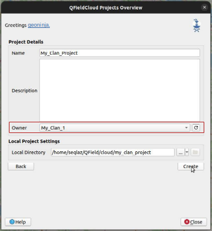
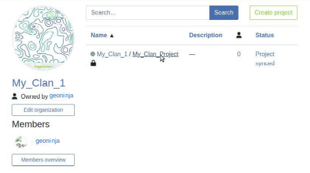
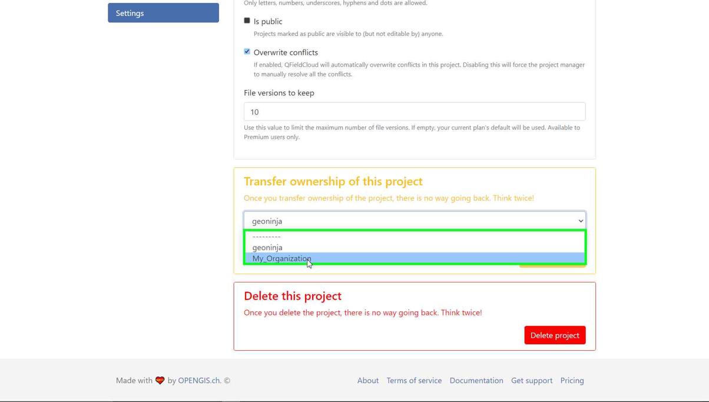

Guía para comenzar¶
Ayuda
Disponemos de una plataforma de debate de la comunidad para debatir sus preguntas, dudas e ideas. No dude en consultarla.
Consiga una cuenta de QFieldCloud¶
Preparación en escritorio
Vaya a la página de registro, introduzca sus datos y cree una nueva cuenta de QFieldCloud.

Editar perfil¶
Cambie su configuración personal. Añada una foto de perfil u obtenga una visión general sobre sus pertenencias y su pertenencia a organizaciones.
Facturación¶
Es necesario añadir la información de facturación a la cuenta para usar los planes Pro u Organization de QFieldCloud.
Para un Plan Pro siga estos pasos:
- Pulse en el nombre de usuario arriba a la derecha de la página
- Pulse en "Actualizar a Pro"
- En la sección "Suscripción", pulse en "Actualizar"
- En la sección Pro, pulse en "Activar"
- Lea detenidamente las "Condiciones del servicio" y acéptelas, luego pulse "Proceder"
- En la sección "Dirección de facturación", rellene el formulario y luego pulse en "Proceder con el pago".
Para un Plan Organization siga estos pasos:
- Pulse en el nombre de usuario arriba a la derecha de la página
- Pulse en "Crear organización"
- Pulse en "Crear"
- Elija un nombre para su organización con 150 o menos caracteres: letras, números y @/./+/-/_
- Pulse en "Crear"
- Elija cuánto almacenamiento necesita
- Lea detenidamente las "Condiciones del servicio" y acéptelas, luego pulse "Proceder"
- En la sección "Dirección de facturación", rellene el formulario y luego pulse en "Proceder con el pago".
Si la información de facturación está incompleta, es posible terminar de completar el formulario en cualquier momento yendo a Facturación > Suscripción > Terminar compra
Toda la información sobre precios está disponible en la página de Precios.
Interrumpir servicios de QFieldCloud¶
-
Si necesita cancelar su suscripción de QFieldCloud: 1.1. Para cuentas con plan Pro, pulse en el nombre de usuario y elija "Configuración". 1.2. Para cuentas con plan Organización, pulse en el nombre de su organización y luego en "Editar organización". Tenga en cuenta que necesita ser propietario de esa organización.

-
Vaya a la sección "Facturación" y pulse "Cambiar".

-
Seleccione "Cancelar suscripción".

-
Confirme la cancelación en la ventana emergente siguiente.

-
Aparecerá un mensaje de Nyuki indicando que la suscripción finalizará al término del periodo de facturación actual.

Organizaciones¶
Sus organizaciones aparecen aquí. Obtenga más información sobre los equipos, los miembros y sus funciones en conceptos del Ecosistema QField.
Proyectos¶
Busque y elija un proyecto de la lista o comience a crear un nuevo proyecto.
{kind=link}
Conexión a QFieldCloud en QGIS Desktop¶
Preparación en escritorio
Para conectarse a QFieldCloud, necesita el complemento "QFieldSync" en QGIS. Los siguientes pasos le muestran cómo puede instalar y sincronizar sus datos hacia y desde QFieldCloud.
Instale QFieldSync¶
Abra el gestor de complementos de QGIS accediendo al menú Complementos -> Administrar e instalar complementos...
Busque QFieldSync en la lista de complementos e instale la última versión haciendo clic en el botón Instalar complemento.
Nota
Dado que QFieldCloud está todavía en fase beta, hay frecuentes actualizaciones y correcciones. Por favor, actualice su complemento QFieldSync a menudo. En caso de un problema, por favor intente actualizar a la última versión antes de informar.
{kind=link}
Después de una instalación con éxito aparece una nueva barra de herramientas:

Iniciar sesión en QFieldCloud¶
Haga clic en el icono de la nube  en la barra de herramientas de QFieldSync.
Aparecerá una nueva pantalla de inicio de sesión:
en la barra de herramientas de QFieldSync.
Aparecerá una nueva pantalla de inicio de sesión:

Ingrese sus credenciales creadas previamente durante el registro de la cuenta.
Nota
Si utiliza una contraseña en QGIS por primera vez, le pedirá que establezca una contraseña maestra que gestione todas las demás contraseñas utilizadas en QGIS. Más información sobre la contraseña maestra aquí: Documentación de QGIS
Explore la pantalla resumen de proyectos: su usuario actual subrayado y azul, un botón de desconexión abajo a la izquierda, un botón nube para crear nuevos proyectos y, a la derecha, un botón refrescar para recuperar la lista más reciente de proyectos. Los usuarios recién registrados verán una tabla vacía y en cuanto creen nuevos proyectos, la lista crecerá. La pantalla resumen de proyectos tiene este aspecto:

Los iconos indican el estado en la nube y local de los diferentes proyectos.
Estado local:
 indica que sólo existe un proyecto remoto en la nube.
indica que sólo existe un proyecto remoto en la nube.
 indica que el proyecto en la nube también está almacenado localmente.
indica que el proyecto en la nube también está almacenado localmente.
Estado de la nube:
Rojo: estado fallido -> el proyecto no es válido y no es entendido por la nube. El usuario necesita arreglar/subir su proyecto .qgs/.qgz. Marrón: estado ocupado -> estamos trabajando en su proyecto, por favor sea paciente. No puede hacer mucho con el proyecto mientras tanto. Verde: estado ok -> el proyecto ha sido entendido con éxito por la nube. Puede intentar descargarlo en QField, pero el éxito no está garantizado.
El estado de cada proyecto se muestra con una información sobre herramientas.
Haciendo doble clic en un proyecto de la lista, puede ver y editar las propiedades específicas del proyecto.

Cambiar el servidor predeterminado de QFieldCloud en QField y QFieldSync¶
De forma predeterminada, QField y QFieldSync se conectan al servicio de QFieldCloud en app.qfield.cloud.
Puede modificar el servidor predeterminado de QFieldCloud al que se conectan QField y QFieldSync:
- Abra la pantalla de identificación en QField o QFieldSync.
- Toque dos veces en el icono de Nyuki (el logo de la abeja azul de QFieldCloud).
- Esta acción mostrará un campo en el que puede introducir la dirección del servidor preferido de QFieldCloud.
- Introduzca los detalles del servidor deseado en el campo proporcionado. (Dejar el campo vacío conectará al servidor predeterminado de QFieldCloud en app.qfield.cloud)
{kind=link}

Nota
Es importante tener en cuenta que QFieldSync no admite el mismo proyecto de nube en múltiples perfiles QGIS. Como recomendación utilice un único perfil QGIS para sus proyectos QFieldCloud para evitar problemas de sincronización.
Crear y configurar su proyecto en la nube¶
Cree un proyecto nuevo haciendo clic en el botón nube, abajo a la izquierda. Primero deberá elegir cómo crear su nuevo proyecto, entre
- "Convertir el proyecto abierto actualmente a proyecto en la nube". Se crea un proyecto nuevo compatible con QFieldCloud a partir del proyecto de QGIS abierto actualmente. Para hacer esto, los conjuntos de datos se copiarán en un directorio de exportación que actuará como su espejo local. Los datos vectoriales se convertirán al formato geopackage para facilitar la sincronización de datos desde múltiples dispositivos, mientras que otros tipos de datos se copiarán en la nueva localización del proyecto.
Para convertir el proyecto actual es necesario un directorio completamente vacío.
- "Crear un nuevo proyecto de QFieldCloud vacío". Se creará un nuevo proyecto de QFieldCloud en blanco. Tendrá que mover todos los archivos del proyecto dentro del directorio local seleccionado, con el archivo de proyecto como su raíz. Los archivos del proyecto solo se subirán cuando pulse el botón de sincronización. Asegúrese de que el directorio seleccionado solo contiene un archivo de proyecto de QGIS.

Un formulario le pedirá un nombre, descripción y directorio local para el proyecto. En el directorio local puede tener diferentes situaciones:
- La ruta introducida aún no contiene un archivo de proyecto de QGIS.
- La ruta introducida contiene un archivo de proyecto de QGIS.
- Por favor, seleccione el directorio local donde guardar el proyecto.
- La ruta introducida es una ruta relativa. Por favor, introduzca una ruta de directorio absoluta.
- La ruta introducida no es un directorio. Por favor, introduzca una ruta de directorio válida.
- La ruta introducida no es un directorio existente. Se creará después de que envíe este formulario.
- Se han encontrado múltiples archivos de proyecto en el directorio. Por favor, deje solamente un proyecto de QGIS en el directorio raíz.
Crear un proyecto en una organización¶
Cómo crear un proyecto en una organización:
Opción 1: Convierte directamente tu proyecto local en un proyecto de Organización QFieldCloud:
-
Follow the steps configure your cloud project, until you get the "Project details".
-
Cambia el propietario del proyecto a su Organización.

-
Haga clic en "Crear" para iniciar la conversión y sincronización. Cuando termine verá que el proyecto está en su Organización en QFieldCloud.

Nota
QField Sync 4.6 o posterior es necesario para esta funcionalidad
Opción 2: Cargar directamente en la organización:
-
Seleccione su organización.

-
Una vez dentro de la organización, pulse en "Crear un proyecto".

-
Seleccione "Crear un proyecto nuevo vacío".

-
Puede ver el proyecto nuevo en la vista general.

-
En QGIS en QFieldSync verá el proyecto nuevo listado. Pulse en "Editar proyecto en la nube seleccionado".

-
Elija la carpeta en la que quiere guardar el proyecto.

-
En la carpeta seleccionada puede pegar un proyecto ya creado o guardar uno nuevo.

-
Una vez que la carpeta contenga el proyecto, puede sincronizarlo.

-
Finalmente, suba los cambios a la nube.

-
Puede comprobar que los archivos están presentes en el proyecto de la organización.

Opción 3: Trasladar el proyecto de su propia cuenta a las Organizaciones:
-
Si ya tiene un proyecto en QFieldCloud (consulte configurar su proyecto en la nube). En el proyecto, pulse en "Configuración" y seleccione "Transferir propiedad de este proyecto" para elegir la organización a la que desee hacer la transferencia.

-
Aparecerá una ventana emergente para confirmar la transferencia. Para proceder, necesita escribir "Here be dragons" y pulsar "Transferir proyecto".

Configurar las capas de su proyecto para QField¶
Configure las capas del proyecto haciendo clic en el quinto icono de la barra de herramientas de QFieldSync  . Aquí puede configurar las acciones de las capas de QFieldCloud. La mayoría de las veces se necesita configurar una preferencia por capas en línea o fuera de línea. Para un control más fino, en los ajustes avanzados puede configurar la acción capa por capa. Obtenga más información sobre cómo configurar sus capas en la Guía de inicio de QFieldSync!.
. Aquí puede configurar las acciones de las capas de QFieldCloud. La mayoría de las veces se necesita configurar una preferencia por capas en línea o fuera de línea. Para un control más fino, en los ajustes avanzados puede configurar la acción capa por capa. Obtenga más información sobre cómo configurar sus capas en la Guía de inicio de QFieldSync!.
Se recomienda utilizar capas en GeoPackage para la edición colaborativa. Consulte la guía de configuración avanzada para obtener más información sobre el soporte de formatos vectoriales.
Nota
Si utiliza fuentes de datos experimentales sin un campo de clave primaria (por ejemplo, archivos shape, GeoJSON, etc.), debe tener un campo fid en minúsculas que se utilizará como clave primaria que identifique de forma exclusiva cada objeto espacial.
Cualquier formato de capa ráster y vectorial admitido por QField se puede usar como datos de solo lectura.

Habilitar la subida automática de cambios a QFieldCloud¶
Con esta funcionalidad, los usuarios y gestores de proyectos de QFieldCloud pueden forzar la subida automática de cambios pendientes a dispositivos QField en el campo, así como especificar el intervalo entre subidas. La funcionalidad se activa a través de una configuración del proyecto, permitiendo la activación automática.
-
Access Project Settings: Navigate to the QField panel in the Project Settings dialog provided by the QFieldSync plugin.
-
Enable Auto-Push: Toggle the "Automatically push pending changes on the following interval" option and establish your preferred interval.

{kind=link}
Nota
Benefits:¶
- Real-Time Updates: Ensures prompt synchronization of field data with the QFieldCloud project.
- Streamlined Workflow: Minimizes manual intervention and ensures surveyors do not need to worry about synchronization, helping them focus on data quality.
Considerations:¶
- Network Stability: Ensure stable internet connectivity for auto-push functionality.
- Battery Optimization: Implement strategies to mitigate battery consumption on QField devices during prolonged fieldwork.
Subir un proyecto¶
Una vez configurado, puede presionar el botón de la nube para abrir el diálogo de sincronización. Aquí tiene que decidir lo que prefiere: el archivo local o el archivo de la nube.

Ahora debería ver su proyecto y archivos en QFieldCloud
Activar notificaciones para cambios de QFieldCloud¶
- Acceda a la configuración de su cuenta.
-
Vaya a la sección Notificaciones. Aquí puede personalizar la frecuencia de las notificaciones que desea recibir en la dirección de correo registrada con su cuenta..

Los eventos sobre los que se le notifica son: - Usuario creado - Organización creada - Organización borrada - Membresía de organización creada - Membresía de organización borrada - Equipo creado - Equipo borrado - Membresía de equipo creada - Membresía de equipo borrada - Proyecto creado - Proyecto borrado - Membresía de proyecto creada - Membresía de proyecto borrada
Recibirá notificaciones sobre eventos en los que no sea actor. Estas notificaciones son específicamente para eventos que son iniciados por otros miembros de su organización o colaboradores de sus proyectos.
Mejore su proyecto con el "Empaquetador optimizado"¶
Recomendamos utilizar el nuevo " Empaquetador Optimizado" sobre el obsoleto "Edición sin conexión de QGIS Core" para todos sus proyectos. Configure el empaquetador en "Packaging Offliner" en la pestaña "Ajustes" de su proyecto.
The "Optimized Packager" supports consolidating filtered layers of same datasource into a single offline layer, respecting distinct symbology but also using less storage. Here is an example to illustrate this feature:
Ejemplo de configuración:¶
- Capa 1.1:
- Fuente de datos:
layers.gpkg - Tabla:
layer1 -
Filtro:
id % 2 = 1 -
Capa 1.2:
- Fuente de datos:
layers.gpkg - Tabla:
layer1 - Filtro:
id % 2 = 0
Resultado:¶
Para el nuevo offliner:
- Se genera una única capa en el geopackage fuera de línea, combinando los datos de la layer1 con los filtros especificados.
Para el antiguo (QGIS) offliner:
- Se crean dos capas separadas, cada una de las cuales representa los conjuntos de datos filtrados:
- Capa 1: Filtrado con id % 2 = 1.
- Capa 2: Filtrado con id % 2 = 0.
{kind=link}
Note
This configuration must be set in the Settings page of each project in QFieldCloud.
Dispositivo de campo¶
Trabajo de campo
Instalar QField¶
Descargue e instale la última versión de QField del Play Store. Desplácese hasta la parte inferior y habilite las pruebas beta ¡No utilice esta versión en producción!
Nota
Dado que QField 2.0 está todavía en fase beta, hay actualizaciones y correcciones regulares al menos semanalmente. Por favor, actualice su QField experimental al menos una vez a la semana. En caso de un problema, por favor, intente reproducirlo en la última versión antes de informar.
Empezar a trabajar en su proyecto¶
{kind=link}
Inicie sesión con su nombre de usuario y contraseña
{kind=link}
Seleccione un proyecto para descargar en su dispositivo:

Sincronizar sus cambios.¶
Make a change to your data. Either create a new feature, delete a feature, or modify the geometry or attributes. Open the blue cloud button on the top left of the screen:

Choose an action with the change you made to your data. Each of the actions have an explanation what you should expect to happen:

Sus cambios están ahora disponibles para todos los que tengan acceso a su proyecto en la nube.
Puede encontrar más información en Configuración avanzada de QFieldCloud y Referencia técnica de QFieldCloud.